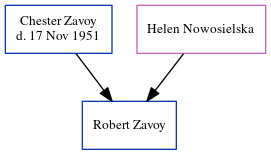

John Henry Fordham cNov 1887 - 1915
[ Home ] | [ Calendar ] | [ Surnames Index ] | [ Errors ] | [ Family History ]A house boy on a farm and the child of William Fordham and Mary Baker, John Fordham was born in Ramsgate, Kent, England c. Nov 18871,2,3,4,5,6,7 and married Maria Rowland (with whom he had 1 child, Rosa Estelle) in Thanet, Kent, England in Jan/Feb/Mar 191211.
During his life, he was living St Peters in Thanet in 18911; at Reading Street, St Peters in Thanet on 5 Apr 189112; in Staple, Kent, England on 31 Mar 190113; and St Lawrence in Thanet on 2 Apr 19113 and in 19157. During 1915, he was serving in the army (regiment: Buffs (East Kent Regiment); Rank: Private; Service number: G/4763).
He died on 3 May 1915 in Flanders, Belgium6,7,8,9,10 (g/4763. 2nd Bn. The Buffs (East Kent Regiment). 3rd May 1915. Panel12and14) and was buried in Ypres, West Flanders, Belgium after 3 May 19156.
Parents
- William Henry
- Mary Ann Elizabeth
Children
- Rosa Estelle was born on 4 Aug 1915
Citations
- 1891 England Census Online publication - Provo, UT, USA: The Generations Network, Inc., 2005.Original data - Census Returns of England and Wales, 1891. Kew, Surrey, England: The National Archives of the UK (TNA): Public Record Office (PRO), 1891. Data imaged from The National
- 1901 England Census Online publication - Provo, UT, USA: The Generations Network, Inc., 2005.Original data - Census Returns of England and Wales, 1901. Kew, Surrey, England: The National Archives of the UK (TNA): Public Record Office (PRO), 1901. Data imaged from the National
- 1911 England Census Online publication - Provo, UT, USA: Ancestry.com Operations, Inc., 2011.Original data - Census Returns of England and Wales, 1911. Kew, Surrey, England: The National Archives of the UK (TNA), 1911. Data imaged from the National Archives, London, England.
- England & Wales births 1837-2006 - Findmypast
- England & Wales, FreeBMD Birth Index, 1837-1915 Online publication - Provo, UT, USA: The Generations Network, Inc., 2006.Original data - General Register Office. England and Wales Civil Registration Indexes. London, England: General Register Office. © Crown copyright. Published by permission of the Cont
- Global, Find A Grave Index for Non-Burials, Burials at Sea, and other Select Burial Locations, 1300s-Current Ancestry.com Operations, Inc.
- UK, Soldiers Died in the Great War, 1914-1919 Online publication - Provo, UT, USA: Ancestry.com Operations Inc, 2008.Original data - British and Irish Military Databases. The Naval and Military Press Ltd.Original data: British and Irish Military Databases. The Naval and Military PressLtd.
- Commonwealth War Graves Commission Debt Of Honour - Findmypast
- Other
- Web: International, Find A Grave Index Ancestry.com Operations, Inc.
- England & Wales, Civil Registration Marriage Index, 1837-1915
- 1891 England, Wales & Scotland Census - Findmypast (was age 3 and the son of the head of the household)
- 1901 England, Wales & Scotland Census - Findmypast (was age 14 and the son-in-law of the head of the household)
Media
England & Wales births 1837-2006 - BMD/B/1887/4/AZ/000193/086
1891 England, Wales & Scotland Census - GBC/1891/0005914940
Soldiers died in the Great War 1914-1919 Transcription - GBM-WWISD-0634258
British Armed Forces And Overseas Deaths And Burials - BMD-OVS-ARR1-001257-103
Family Tree
Map
Generated by ged2site. Last updated on Jul 3, 2024
Known Issues
Date of birth of child Rosa Fordham (4 Aug 1915) is later than his own date of death (3 May 1915)
Can't find relationship with the home person
Location for 5 Apr 1891 (St Peters, Thanet, Kent, England) differs from mother's (Reading Street, St Peters, Thanet, Kent, England)
Date of residence (1891) differs from mother's in same year (5 Apr 1891)
May have been living with father on 1891, but the addresses don't match or aren't detailed enough to be sure
May have been living with mother on 31 Mar 1901, but the addresses don't match or aren't detailed enough to be sure
Listed in the residence for 1915, but spouse Maria Rowland is not
Adding date of burial as 'aft 3 May 1915'
Location for "military service" on 1915 is empty